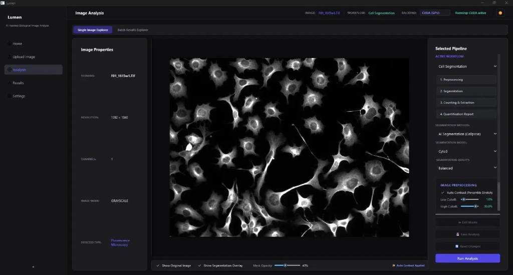
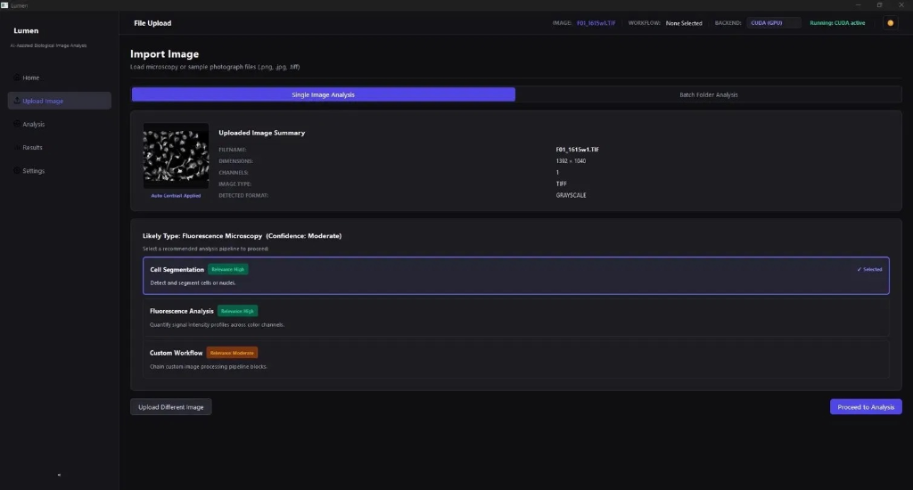
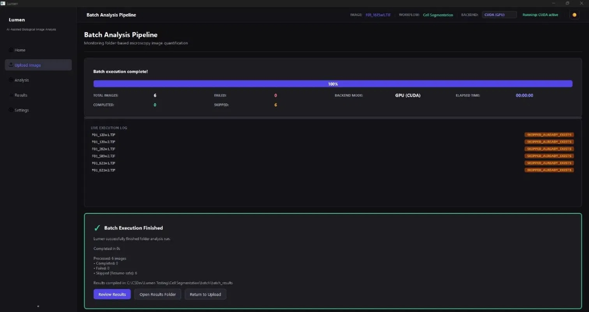
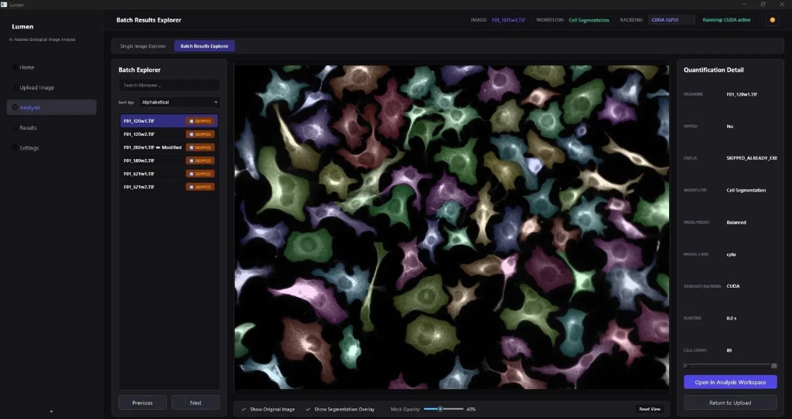

LOCAL BIO-IMAGE INFORMATICS & HYBRID SEMANTIC RETRIEVAL ENGINES
Featuring Lumen, a local deep-learning cell segmentation platform, and Atlas-Lab, a hybrid search and deterministic biomedical knowledge graph engine.
Deep Learning SegmentationHybrid Semantic SearchLocal-FirstKnowledge GraphsProduction-Validated
74
cells / image
4.74ms
P50 graph lookup
200+
images batch-validated
2
full-stack platforms
Project 01 · Lumen | Project 02 · Atlas-Lab
PROJECT 01 / 02
Lumen
AI-powered biological image analysis , from raw microscopy TIFFs & Zeiss CZI files to publication-ready quantification, entirely on your own workstation.
Modern labs generate terabytes of microscopy data per week. The bottleneck is never acquisition , it's quantification. Every existing tool forces a brutal tradeoff.
⚙️
ImageJ / Fiji
Manual & Brittle
Watershed segmentation suffers marker explosion in dense fields and marker starvation in sparse ones. Every new dataset demands expert macro re-tuning from scratch.
Est. 2-4h setup per imaging session
🧮
Classical CV
Heuristics Don't Generalize
Otsu thresholding and Hough transforms break across microscope brands, staining protocols, and illumination profiles. Noise sensitivity is catastrophic at low SNR.
~40% F1 drop on unseen cell lines
☁️
Cloud SaaS
Privacy & Cost Barriers
Patient-derived microscopy data cannot leave the institution. Cloud platforms demand connectivity, proprietary formats, and per-image charges , punishing at scale.
$0.08-0.40 per image at scale
✦
Lumen's answer: A local, deep-learning-first platform that auto-profiles every image, selects the right model, and delivers publication metrics , zero configuration, zero cloud, zero expertise tax.
Competitive Landscape
Why researchers choose Lumen
A feature-by-feature audit against the tools labs actually use today.
CapabilityImageJ/FijiCellProfiler✦ Lumen
Deep learning segmentation (CNN-based)⊘◑✓
Zero-config auto modality detection⊘⊘✓
Zeiss CZI native file support◑⊘✓
Folder-scale batch (200+ images, resume-safe)◑✓✓
Sub-cellular puncta detection (DoG)⊘◑✓
Per-channel fluorescence quantification◑✓✓
Physical unit calibration (pixel ↔ µm²)⊘✓✓
Reproducibility JSON manifest⊘◑✓
100% local , no data upload ever✓✓✓
CUDA GPU acceleration⊘⊘✓
✓ Fully supported◑ Partial / plugin required⊘ Not available
System Architecture
Three functional layers. One unified platform.
A modular, single-responsibility architecture , GUI, processing, and persistence are cleanly separated and independently extensible.
Localizes and measures sub-cellular compartments using Difference-of-Gaussians bandpass filtering, 8-connected labeling, vectorized size filtering via np.bincount, and centroid-based cell assignment.
PunctaDetectorPunctaAssignerPunctaMeasurer
AI Engine · Cellpose
How the CNN actually segments your cells
Not a threshold. Not a heuristic. A generalizable deep learning model trained on 70,000+ segmented biological images across dozens of cell types.
🧠 U-Net Encoder-Decoder Architecture
Convolutional layers with ReLU activations learn hierarchical spatial features. Skip connections feed encoder feature maps directly into the decoder at every resolution level.
🌊 Gradient Flow Field Prediction
Cellpose predicts a spatial gradient flow field , the direction each pixel "flows" toward its parent cell's center , naturally handling touching, overlapping, and irregular cells.
Watershed requires reliable seed detection , it fails on uneven illumination and touching cells. Cellpose's flow-field approach has no seed detection step and needs no manual tuning.
🎮 Tunable Quality Presets
Balanced , default thresholds for typical density Sensitive , loosened thresholds for sparse/dim populations
Live In The App · Cell Segmentation Workflow
One image file. Single channel. AI-powered segmentation, live.
This is Lumen actually running: a fluorescence microscopy image loaded, contrast-stretched, and segmented using Cellpose.
📁 Source File
F01_1615w1.TIF Fluorescence Microscopy · Auto-contrast stretched on import (1.0% to 99.0%)
Cell Segmentation · AI Segmentation (Cellpose) · model Cyto3 · quality Balanced GPU Backend: Active (CUDA-accelerated)
🖥️ Interactive Workspace
A zoomable, pannable canvas with debounced sliders for mask opacity and outline display.
Lumen · Image Analysis · Single-Image Workspace

Under The Hood · Revamped CZI Pipeline
From raw bytes to biology , channel by channel
The CZI pipeline was rebuilt so any N-channel hyperstack decodes once and every channel view is served instantly from memory.
STEP 1
Raw CZI Bytes
libCZI native buffer, single read
→
STEP 2
CziReader Decode
aicspylibczi · XML metadata + planes
→
STEP 3
Per-Channel Split
DAPI / GFP / RFP arrays, memory-copied
→
STEP 4
Auto-Contrast & Composite
Per-channel percentile stretch, RGB merge
→
STEP 5
Segment + Quantify
Cellpose on DAPI, stats on GFP/RFP masks
🔵 Channel 0 · DAPI
Nuclear counterstain. Used as the segmentation reference channel , every downstream mask is anchored to it, since nuclei are the most reliable, non-overlapping landmark in a crowded field.
🟢 Channel 1 · GFP
Cytoplasmic reporter signal. Quantified per-cell once masks exist: mean, median, integrated density , the primary readout channel in most transfection/expression assays.
🔴 Channel 2 · RFP / mCherry
Secondary reporter for co-localization or dual-marker experiments. Same per-cell statistics, enabling GFP↔RFP correlation directly from one exported CSV.
Why this matters: before the revamp, switching channel view meant re-reading the file. Now the decoded planes stay resident, so composite ↔ single-channel toggling and re-contrast happen in milliseconds , even on a 3-channel, multi-scene hyperstack.
Inside Lumen · Workspace & Canvas
Import once. Inspect any cell interactively.
A hardware-accelerated single-image canvas for exploratory work, offering direct visual feedback and instant region queries.
🖱️ Hardware-Accelerated Canvas
Built on Qt's QGraphicsView, providing smooth zooming, panning, and adjustable mask opacity overlays. Toggle between original and segmented masks instantly.
🖱️ Click-to-Inspect Any Cell
Click any segmented region to retrieve immediate properties like Cell ID, Area, Diameter, and Centroid, queryable directly on the canvas.
🧵 Non-Blocking Inference
All model evaluation runs on a background QThread worker. The UI remains fully responsive during multi-minute CPU inference runs.
Lumen · File Upload · Workflow Selection

Inside Lumen · Batch Processing Engine
Or point at a folder and walk away.
A persistent background execution system designed for folder-scale runs of hundreds of images, fully decoupled from the GUI.
⚡ Non-Blocking Batch Design
A progress bar, live execution logs, and an active cancel button keep the batch run interactive. The GUI never freezes, even under heavy stress.
🔄 Resume-Safe Execution
Lumen automatically checks the target directory and skips previously processed images, allowing interrupted runs to resume exactly where they stopped.
📊 Strict FSM Lifecycle
Atomic state transitions (IDLE, RUNNING, PAUSED) protect the session, preventing torn states or race conditions between worker threads.
Lumen · Batch Analysis Pipeline · 100% Complete

⚡ Non-Blocking Batch by Design
Progress bar, live log, and cancel button stay interactive across a 200-image run. GUI never freezes.
🔄 SKIPPED_ALREADY_EXISTS
Output detection skips processed images on re-run , an interrupted 200-image batch resumes exactly where it stopped.
📊 Strict FSM Lifecycle
Atomic transitions IDLE → RUNNING → PAUSED → IDLE. No torn state on interrupt, thread-safe across both workers.
Inside Lumen · Results Explorer
Every cell, every image, searchable and visual.
Every processed image becomes a queryable record. Click any result to explore its multi-colored segmented boundaries and metrics.
🔍 Debounced Results Gallery
A debounced filename filter keeps navigation fluid. Displays processed list items with execution status badges (Skipped, Completed).
📋 Color-Coded Mask Overlay
Renders high-contrast, multi-colored segmentation masks over cell bodies, allowing researchers to quickly audit cell boundaries.
💾 Per-Image Detail Sidebar
Instantly displays the cell count, active model preset, resolved backend (CUDA/CPU), and runtime whenever an image is selected.
Lumen · Batch Results Explorer · Multi-Channel Masks

📊 Standardized Per-Cell Metrics
Total count, mean/median area, cell density, average diameter , the same six statistics on every run, in every export.
Centroids of labeled puncta mapped to the owning Cellpose cell ID; unassigned puncta collected separately.
Layer 1 · Imaging Layer
Native support for Zeiss CZI & hyperstacks
One reader factory handles every format a modern microscopy lab produces , from simple PNGs to proprietary multi-scene Z-stacks.
📁 ImageReaderFactory
Instantiates the correct reader from file extension. Enforces the memory-decoupling contract , NumPy arrays are fully .copy()-d out of native library buffers, preventing silent C++ segfaults in background threads.
🔬 CziReader · Zeiss Native
Parses Zeiss CZI via aicspylibczi. Dynamically extracts XML metadata for physical dimensions, voxel scale, scene counts, Z-planes, and channel designations (DAPI, FITC, mCherry).
📐 Z-Stack Projection Engine
Stateless ProjectionEngine collapses 3D hyperstacks into 2D analysis matrices via Maximum Intensity Projection or Mean Projection.
Every dependency chosen for scientific reproducibility. Cellpose pinned below 4.0 to prevent silent model behavior changes.
🐍
Python 3.12+
Core runtime
🖥️
PySide6 Qt 6
GUI framework
🔥
PyTorch
DL inference
🦡
Cellpose <4.0
CNN segmentation
🔢
NumPy
Array operations
🖼️
tifffile
16-bit TIFF I/O
🔬
SciPy ndimage
Region analysis
👁️
OpenCV
Contour precision
🏭
aicspylibczi
Zeiss CZI parser
🗁️
SQLite3
Session state
⚡
CUDA
GPU backend
🧪
pytest
60+ unit tests
60+
Unit tests
200+
Images validated
0
Cloud deps
4
Export formats
Status v0.2.0 · What's Next
Proven today. Five phases to a full platform.
An honest status , validated coverage and known limits , alongside the structured roadmap ahead.
✓ Validated
End-to-end on 16-bit DAPI/GFP fluorescence TIFFs · 60 unit tests · 200-image stress test, no leaks · CUDA + CPU both end-to-end · CZI XML metadata + channel extraction · DoG pipeline detect→assign→measure
△ Known Limits
Pause→Resume shows a brief first-image latency spike · manual mask editor toolbar clips at non-default aspect ratios · StarDist routing hooks exist but backend not yet wired · multi-scene CZI selector still loads first scene automatically
NL queries over results · local LLM report drafts · 100% local
The Endgame
From desktop tool to global research infrastructure
A local AI platform that gives every researcher worldwide access to publication-grade biological image analysis , no cloud, no cost, no expertise barrier.
Cellpose + StarDist ensemble · DoG puncta · 3D volumetrics · time-series tracking.
🌍
Democratized Access
Open source, runs offline on any laptop , levels the field between labs of any budget.
The thesis: modern biological microscopy produces datasets that no human can analyze by hand. The bottleneck is not data collection , it's quantification. Lumen's goal is to make that bottleneck disappear.
PROJECT 02 / 02
Atlas-Lab
A hybrid semantic retrieval engine and a deterministic biomedical knowledge graph , surfacing connected biology in under 10ms, with zero LLM hallucination risk.
Biomedical databases are isolated, and exact-match only
Compounds, proteins, and papers live in separate registries. A single typo returns nothing.
❌ Lexical Mismatch
Search "metformn" for metformin , a single typo in complex chemical nomenclature returns a flat 404.
❌ Semantic Disconnect
"anti-inflammatory pain killer" won't match documents that only mention "COX-2 inhibition" without semantic models.
❌ Siloed Data
Compounds (PubChem), proteins (UniProt), and literature (PubMed) require manual cross-referencing across separate REST calls.
The Solution · Dual-Engine Design
[ User Query ]
↓
Query Resolution Layer
↓ corrected query
Hybrid Search · Dense + Sparse + RRF + Rerank
Search Chunks & Ranking
Related Biology Graph
Two subsystems run in parallel and stay isolated , a slow graph lookup or external API never degrades core search latency.
Query Resolution & Typo Tolerance
From "paracetmol" to acetaminophen, before search runs
A four-stage resolution layer runs ahead of retrieval so typos and brand names never cost a zero-result query.
1
Normalization
Accent stripping, case folding, whitespace normalization on the raw query string.
2
Local Exact Synonym Match
Brand → generic lookup against a local Postgres cache , Advil resolves to Ibuprofen instantly.
3
Local Levenshtein Fuzzy Match (≥90)
RapidFuzz ratio scoring against known compound names catches typos like paracetmol → acetaminophen without a network call.
4
Last-Resort PubChem Autocomplete API
Only when local resolution fails , keeps the expensive network hop rare, not the default path.
Resolution runs in ~1ms locally for the overwhelming majority of queries , the network fallback is the exception, not the rule.
The Hybrid Search Engine
Dense meets sparse , fused by Reciprocal Rank Fusion
Dense and sparse retrieval capture different dimensions of relevance; overlap between their top results is only 10.6%, so fusing both beats either alone.
BM25 keyword index , catches exact terminology and rare tokens dense embeddings under-weight.
🔁 Fusion & Reranking
Reciprocal Rank Fusion merges both ranked lists without relying on raw uncalibrated scores; a cross-encoder reranker refines the top candidates.
RRF_Score(d) = ∑m∈M 1 / (k + rm(d))
k = 60 (smoothing constant) M = { Dense, Sparse }
rrf_fusion() , core loop
for rank, hit in enumerate(dense_hits): scores[hit.id] += 1/(k+rank+1) for rank, hit in enumerate(sparse_hits): scores[hit.id] += 1/(k+rank+1) return sorted(scores, reverse=True)
10.6%
dense ↔ sparse top-result overlap
The Additive Knowledge Graph
Deterministic edges, never hallucinated ones
Every node and edge maps directly from source-backed metadata , no LLM entity extraction, no probabilistic guessing.
graph_nodes
PK node_id (TEXT)
entity_id, entity_type (TEXT)
canonical_name, aliases (TEXT[])
source_system, properties (JSONB)
graph_edges
FK source_node, target_node
relationship_type, confidence (DOUBLE)
evidence_source, evidence_identifier
ON DELETE CASCADE keeps the graph consistent
🧪 PubChem Extraction
IUPAC names, formula, molecular weight, treating diseases, target proteins , mapped straight from the compound payload.
🧠 UniProt Extraction
Gene encoding, pathway participation, and protein-protein interactions , parsed from IntAct arrays.
📌 Stub Nodes
Unresolved target references automatically get placeholder nodes , preserving foreign keys and preventing transactional failures during ingest.
Surfacing The Graph · Next.js Console
Click a badge. Navigate the biology.
The Related Biology panel loads asynchronously , only when expanded , and turns every graph edge into a clickable, explorable search.
Atlas-Lab · Search Playground · Ibuprofen
Ibuprofen CID 3672
Non-steroidal anti-inflammatory drug · COX-1/COX-2 inhibitor
Cascade deletion via ON DELETE CASCADE keeps the graph clean · all queries parameterized via asyncpg ($1, $2) , zero SQL injection surface · bulk restore temporarily toggles Postgres to replica mode to safely disable FK checks during raw inserts.
Future Scope & Vision
Proving a lightweight local stack can match enterprise search portals
Empower molecular biologists to discover latent relations , compound → target protein → pathway , instantly, without GraphRAG cost or hallucination risk.
🧠
GNN Binding Prediction
Graph neural networks for target binding affinity prediction.
🔭
Distributed Qdrant
Migrate vector indexes to distributed clusters at scale.
📑
Automatic Curation
SciSpacy NER over abstracts to expand the literature graph automatically.
Educational vision: an open-source, clearly-architected reference for students learning search engineering and bioinformatics systems design , isolation, determinism, and asynchronicity as first-class design principles.
Acknowledgements
Acknowledgements
Sincere appreciation for the guidance, support, and collaboration that made this project a success.
Scientific Mentorship
Heartfelt gratitude to Dr. Akash Ranjan (Lab of Computation and Functional Genomics, CDFD) for his academic supervision, valuable feedback, and scientific guidance throughout this project. His expertise was vital to the engineering and direction of the Lumen platform.
Practice School Division
Sincere thanks to the Practice School Division, BITS Pilani and Prof. Jeevan Jaidi, our Faculty in Charge, for being offered an opportunity to intern here and for their support and guidance throughout the semester.
Collaboration & Support
Special thanks to my co-interns at CDFD for their constant motivation, brainstorming sessions, and shared technical discussions. The scientific camaraderie and mutual feedback made the development journey engaging and highly productive.
Lumen&Atlas-Lab
Two independent, production-validated platforms , one turning raw microscopy into publication-ready numbers, one turning fragmented biomedical text into a connected, queryable graph.